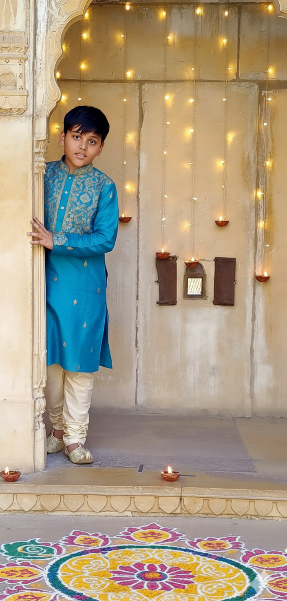
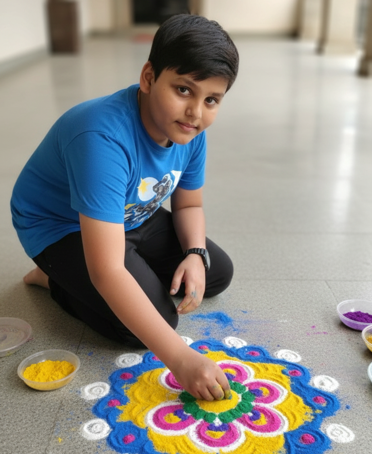

Our Diwali Story: A Personal Celebration!
Diwali, for our family, is not just a festival; it's the warmth of togetherness, the sparkle of tradition, and the sweet taste of homemade joy. This page captures the vibrant spirit of how we celebrate the victory of light over darkness every year.

🍪 Traditional Diwali Snacks & Mithai
Gujarati Diwali treats include savory snacks like chakli, fafda, and sev, known for their crispy texture and spicy-salty taste. Sweet delicacies are equally important, with mohanthal, a rich gram flour fudge, being a staple. Other popular sweets include besan ladoo, chikki, and milk-based treats like shrikhand and basundi, which are often enjoyed with festive meals or as a special dessert.
Audio: The Joy of Cooking
Listen to the comforting sizzle of Jalebi being fried in the background—the sound of a bustling Diwali kitchen!
💥 The Crackle and Pop of Diwali
While we prioritize safe and sound-conscious celebrations, fireworks are traditionally used to ward off evil spirits and signify prosperity. We stick to sparklers (phuljhari) and environmentally friendly options that light up the night sky safely!
✨ Lighting Up Our Home: Diyas and Lights
The word Deepavali means 'Row of Lights' (Deepa = light, avali = row). We meticulously clean the entire house and illuminate every corner with earthen lamps (diyas) and string lights (torans) to welcome the goddess Lakshmi.
Video: Decorating the House
Watch a short clip of our home being decorated with colorful LED string lights and hanging lanterns.
Lantern: Art and Heritage
The Akash Kandil (Sky Lantern) is a gorgeous, handmade paper lantern hung outside, illuminating the night sky.
🎨 Making the Rangoli: Colors of Joy
Rangoli, a beautiful floor art created using colored powders, flowers, or rice, is drawn at the entrance of the home. It is believed to be a sacred welcoming area for the Gods, especially Lakshmi. Our family loves creating intricate, bright patterns!
